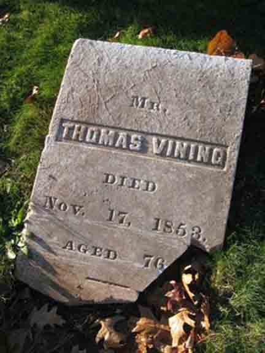
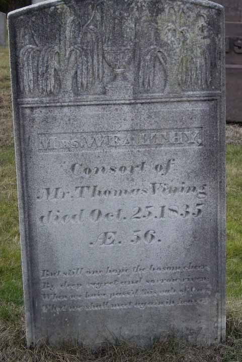

Census Data
| 1850 | 1860 | |
| Thomas Vining | 72 | dead |
| Wealthy (Weston) Vining | dead | |
| Mary (Mason) Vining | 60 | dead |
| John Vining | [living? in separate household] | |
| Thomas A. Vining | married and living in separate household | |
| Edward Vining | [living? in separate household] | |
| Mary Vining | [living? in separate household] | |
| William Henry Vining | married and living in separate household | |
| George Vining | [living? in separate household] | |
| Lucy Vining | [living? in separate household] | |
| Betsey Vining | [living? in separate household] | |
| Wealthy Vining | [living? in separate household] |

Death Data
Gravestone of Thomas Vining, in Hop Meadow Cemetery, Simsbury, Hartford County, Connecticut (from Find A Grave):
